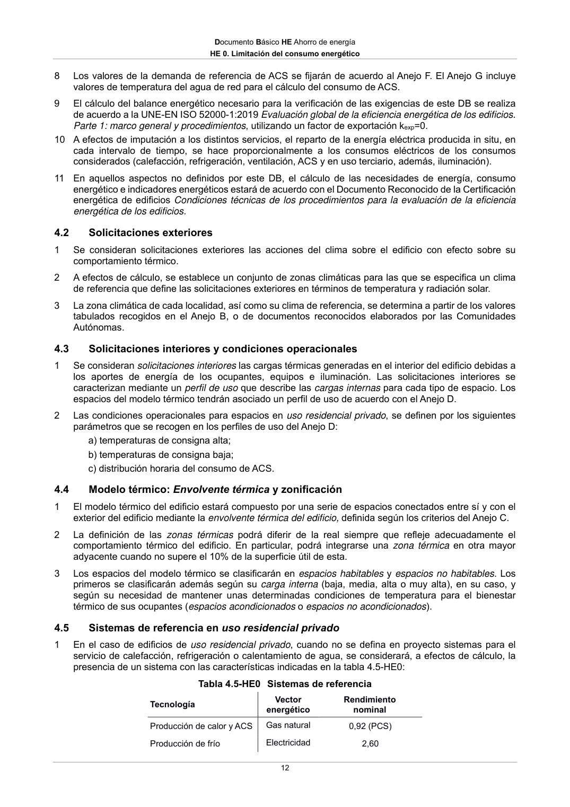

DB-HE · Procedimiento y datos para la determinación del consumo energético · versión 2022-06-14 · capa oficial
Formatos: JSON compacto · Markdown · PDF fuente
Ámbito del documento · texto del ámbito · documento y tablas
ID técnico a0035 · PDF pág. 11-13 · jerarquía no validada por persona · contrastado con el literal de la página 11 (candidato tipográfico); no validado por persona · padre: a0030
Procedimiento y datos para la determinación del consumo energético 4.1 Procedimiento de cálculo 1 Las exigencias relativas al consumo de energía del edificio o parte del edificio establecidas en este documento básico se verificarán usando un procedimiento de cálculo acorde a las características establecidas en este apartado. 2 El procedimiento de cálculo debe permitir determinar la eficiencia energética, expresada como consumo de energía primaria no renovable (Cep,nren), y el consumo de energía primaria total (Cep,tot), necesario para mantener el edificio, o parte del edificio, por periodo de un año en las condiciones operacionales, cuando se somete a las solicitaciones interiores y solicitaciones exteriores definidas reglamentariamente. 3 El procedimiento de cálculo debe permitir desglosar el consumo energético de energía final en función del vector energético utilizado (tipo de combustible o electricidad) para satisfacer las necesidades energéticas de cada uno de los servicios técnicos (calefacción, refrigeración, ACS, ventilación, control de la humedad y, en su caso, iluminación). Para ello, podrá emplear simulación mediante un modelo térmico del edificio o métodos simplificados equivalentes, debiendo considerar, bien de forma detallada o bien de forma simplificada, los siguientes aspectos: a) el diseño, emplazamiento y orientación del edificio; b) la evolución hora a hora en régimen transitorio de los procesos térmicos; c) el acoplamiento térmico entre zonas adyacentes del edificio a distintas temperaturas; d) las solicitaciones exteriores, las solicitaciones interiores y las condiciones operacionales, teniendo en cuenta la posibilidad de que los espacios se comporten en oscilación libre; e) las ganancias y pérdidas de energía por conducción a través de la envolvente térmica, compuesta por los cerramientos opacos, los huecos y los puentes térmicos, con consideración de la inercia térmica de los materiales; f) las ganancias y pérdidas producidas por la radiación solar al atravesar los elementos transparentes o semitransparentes y las relacionadas con el calentamiento de elementos opacos de la envolvente térmica, considerando las propiedades de los elementos, su orientación e inclinación y las sombras propias del edificio u otros obstáculos que puedan bloquear dicha radiación; g) las ganancias y pérdidas de energía producidas por el intercambio de aire con el exterior debido a ventilación e infiltraciones teniendo en cuenta las exigencias de calidad del aire de los distintos espacios y las estrategias de control empleadas; h) las necesidades de los servicios de calefacción, refrigeración, ACS y ventilación, control de la humedad y, en usos distintos al residencial privado, de iluminación; i) el dimensionado y los rendimientos de los equipos y sistemas de producción de frío y de calor, ACS, ventilación, control de la humedad e iluminación; j) el empleo de distintas fuentes de energía, sean generadas in situ o remotamente o procedentes de biomasa sólida, biogás o gases renovables; k) los coeficientes de paso de energía final a energía primaria procedente de fuentes renovables o no renovables; l) la contribución de energías renovables producidas in situ o en las proximidades de la parcela o procedentes de biomasa sólida, biogás o gases renovables. 4 El cálculo de los indicadores de eficiencia energética, producción y consumo de energía se realizará empleando un intervalo de tiempo mensual. 5 Los coeficientes de paso empleados para la conversión de energía final a energía primaria (sea total, procedente de fuentes renovables o procedente de fuentes no renovables) serán los publicados oficialmente. 6 El total de horas fuera de consigna no excederá el 4% del tiempo total de ocupación. 7 Los espacios del modelo tendrán asociadas unas condiciones operacionales y perfiles de uso de acuerdo al Anejo D. Documento Básico HE Ahorro de energía HE 0. Limitación del consumo energético 12 8 Los valores de la demanda de referencia de ACS se fijarán de acuerdo al Anejo F. El Anejo G incluye valores de temperatura del agua de red para el cálculo del consumo de ACS. 9 El cálculo del balance energético necesario para la verificación de las exigencias de este DB se realiza de acuerdo a la UNE-EN ISO 52000-1:2019 Evaluación global de la eficiencia energética de los edificios. Parte 1: marco general y procedimientos, utilizando un factor de exportación kexp=0. 10 A efectos de imputación a los distintos servicios, el reparto de la energía eléctrica producida in situ, en cada intervalo de tiempo, se hace proporcionalmente a los consumos eléctricos de los consumos considerados (calefacción, refrigeración, ventilación, ACS y en uso terciario, además, iluminación). 11 En aquellos aspectos no definidos por este DB, el cálculo de las necesidades de energía, consumo energético e indicadores energéticos estará de acuerdo con el Documento Reconocido de la Certificación energética de edificios Condiciones técnicas de los procedimientos para la evaluación de la eficiencia energética de los edificios. 4.2 Solicitaciones exteriores 1 Se consideran solicitaciones exteriores las acciones del clima sobre el edificio con efecto sobre su comportamiento térmico. 2 A efectos de cálculo, se establece un conjunto de zonas climáticas para las que se especifica un clima de referencia que define las solicitaciones exteriores en términos de temperatura y radiación solar. 3 La zona climática de cada localidad, así como su clima de referencia, se determina a partir de los valores tabulados recogidos en el Anejo B, o de documentos reconocidos elaborados por las Comunidades Autónomas. 4.3 Solicitaciones interiores y condiciones operacionales 1 Se consideran solicitaciones interiores las cargas térmicas generadas en el interior del edificio debidas a los aportes de energía de los ocupantes, equipos e iluminación. Las solicitaciones interiores se caracterizan mediante un perfil de uso que describe las cargas internas para cada tipo de espacio. Los espacios del modelo térmico tendrán asociado un perfil de uso de acuerdo con el Anejo D. 2 Las condiciones operacionales para espacios en uso residencial privado, se definen por los siguientes parámetros que se recogen en los perfiles de uso del Anejo D: a) temperaturas de consigna alta; b) temperaturas de consigna baja; c) distribución horaria del consumo de ACS. 4.4 Modelo térmico: Envolvente térmica y zonificación 1 El modelo térmico del edificio estará compuesto por una serie de espacios conectados entre sí y con el exterior del edificio mediante la envolvente térmica del edificio, definida según los criterios del Anejo C. 2 La definición de las zonas térmicas podrá diferir de la real siempre que refleje adecuadamente el comportamiento térmico del edificio. En particular, podrá integrarse una zona térmica en otra mayor adyacente cuando no supere el 10% de la superficie útil de esta. 3 Los espacios del modelo térmico se clasificarán en espacioshabitables y espacios no habitables. Los primeros se clasificarán además según su carga interna (baja, media, alta o muy alta), en su caso, y según su necesidad de mantener unas determinadas condiciones de temperatura para el bienestar térmico de sus ocupantes (espaciosacondicionados o espacios no acondicionados). 4.5 Sistemas de referencia en uso residencial privado 1 En el caso de edificios de uso residencial privado, cuando no se defina en proyecto sistemas para el servicio de calefacción, refrigeración o calentamiento de agua, se considerará, a efectos de cálculo, la presencia de un sistema con las características indicadas en la tabla 4.5-HE0: Tabla 4.5-HE0 Sistemas de referencia Tecnología Vector energético Rendimiento nominal Producción de calor y ACS Gas natural 0,92 (PCS) Producción de frío Electricidad 2,60 Documento Básico HE Ahorro de energía HE 0. Limitación del consumo energético 13 4.6 Superficie para el cálculo de indicadores de consumo 1 La superficie considerada en el cálculo de los indicadores de consumo se obtendrá como suma de las superficies útiles de los espacios habitables incluidos dentro de la envolvente térmica. 2 Se podrá excluir de la superficie de cálculo la de los espacios que deban mantener unas condiciones específicas determinadas no por el confort de los ocupantes sino por la actividad que en ellos se desarrolla (laboratorios con condiciones de temperatura, cocinas industriales, salas de ordenadores, piscinas cubiertas, etc). 5
1 referencias con forma DB se han ocultado por no cumplir la sintaxis oficial; la lista original sigue en el JSON.

PDF fuente redistribuible: copia fiel enlazada en esta página (SHA256 verificado).